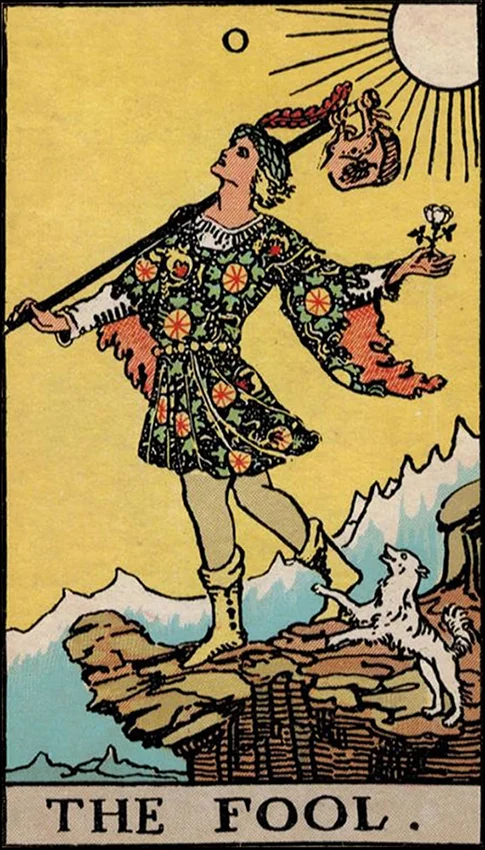

| Archetype | Puer Aeternus (Eternal Youth), The Hero, The Trickster, The Self (in potential) |
| Psychological Role | Represents the beginning of the individuation journey |
| Ego Status | Pre-ego or undeveloped ego—innocent, open, and unaware of the unconscious |
| Symbolic Number | 0 — infinite potential, nothingness and wholeness, symbol of the Self before differentiation |
| Shadow Aspect | Irresponsibility, escapism, fear of maturity or structure |
| Spiritual Meaning | Leap of faith, surrender to the unknown, trust in life’s unfolding |
| Unconscious Connection | Embodies the unconscious psyche before integration begins |
| Journey Theme | The raw, unshaped energy that moves into the world to discover itself |
| Jungian Goal | Transformation through experience; development of ego, shadow, anima/animus, and ultimately the Self |